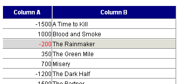
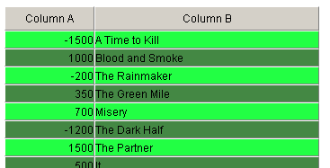

Styling
Many aspects of grid can be customized to achieve custom look and feel. Default settings can be adjusted in css file, custom settings for some rows|cells can be provided in XML or by js commands
Skins
Grid has a set of predefined skins, which can be enabled for the grid, by using
mygrid.setSkin(skin_name);
Defaults
Each skin has its own set of css rules, which applied to the grid. Those rules can be adjusted directly in dhtmlxgrid.css, or as more update-safe uproach - redeclared in separate css file or directly on the html page.
More advanced way to define custom look of grid - creating of custom skin.
Per Grid Customization
In some cases it may be necessary to skip default skin styles as is, but modify styles for some specific grid on page. It can be done by using ID based css selectors in custom styles, or by JS API
The following method is responsible for modifying the default style of the grid and its elements:
//grid.setStyle(ss_header, ss_grid, ss_selCell, ss_selRow); grid.setStyle("background-color:navy;color:white; font-weight:bold;", "","color:red;", "");
 Parameters:
- ss_header - style defining expression for the header;
- ss_grid - style defining expression for grid cells;
- ss_selCell - style defining expression for the selected cell;
- ss_selRow - style defining expression for the selected row.
Styling Even/Odd Grid Rows
There is a method that allows to set different styles for odd and even grid rows:
.even_row{ background-color:#22FF44; } .odd_row{ background-color:#41964e; }
grid.enableAlterCss("even_row","odd_row");
 Parameters:
- cssE - name of css class for even rows;
- cssU - name of css class for odd rows;
- perLevel(true|false) - mark rows not by order, optional, can be used in treegrid only;
- levelUnique(true|false) - creates additional unique css class based on row level, optional, can be used in treegrid only.
Some skins ( modern, light, dhx_blue ) has native css rules for even/odd rows